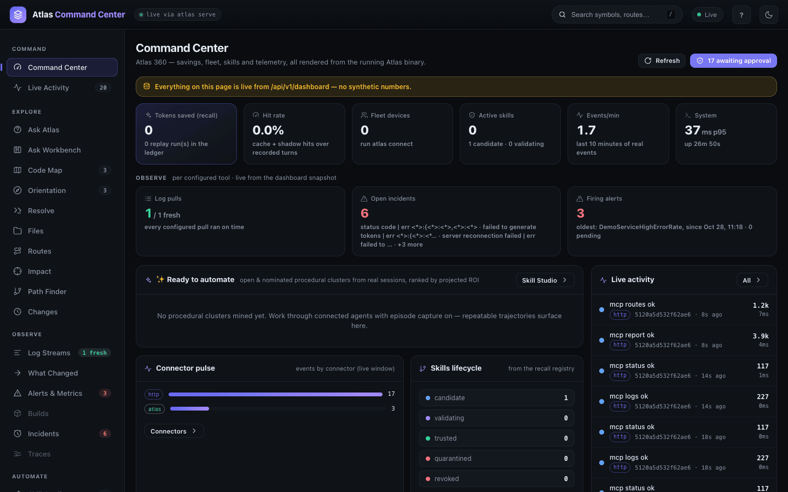
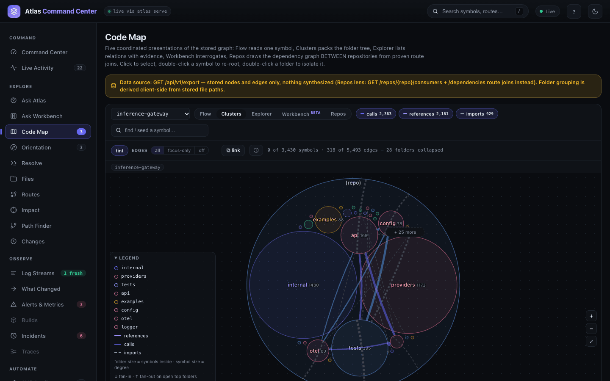
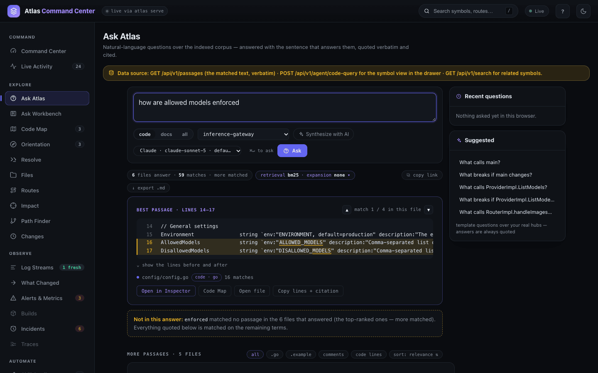
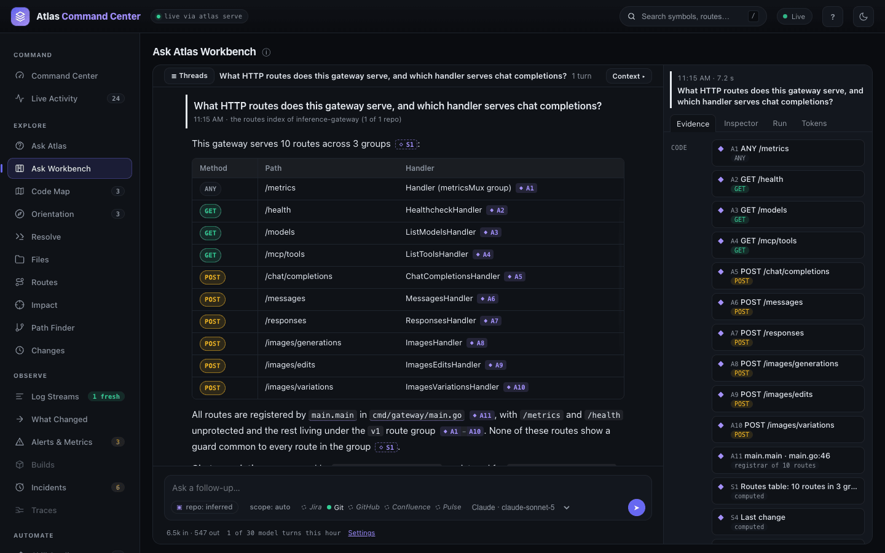
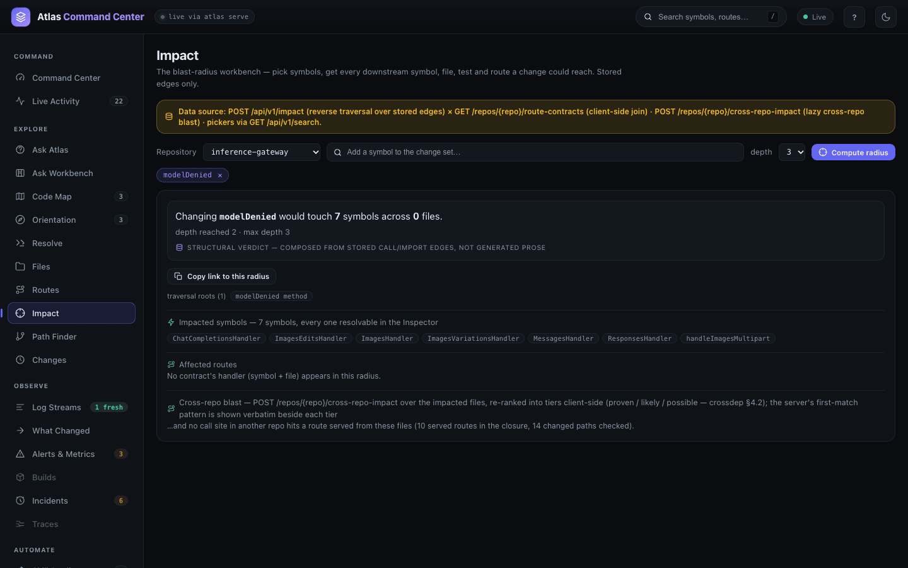
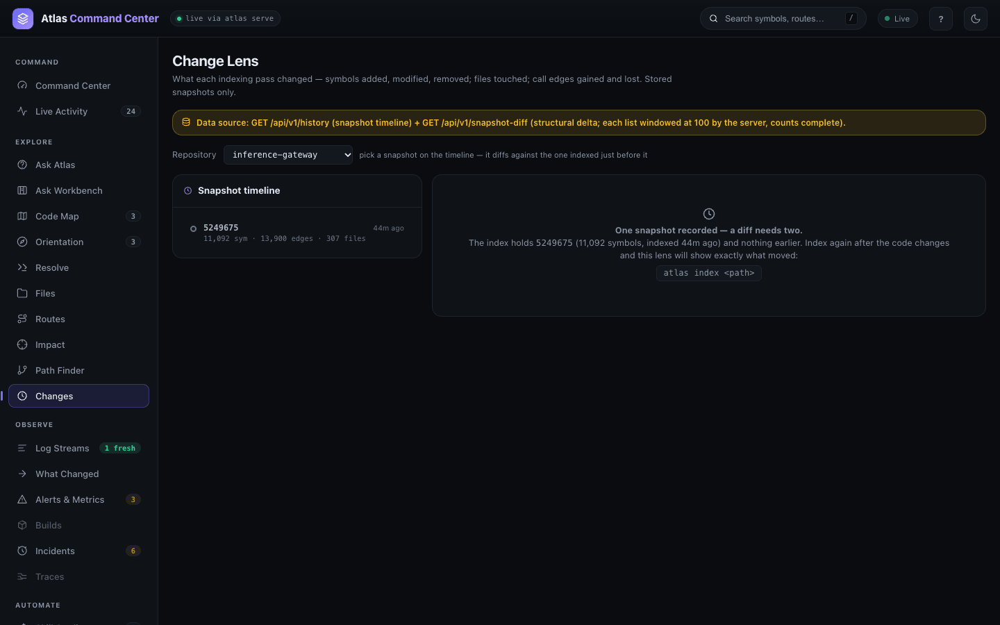
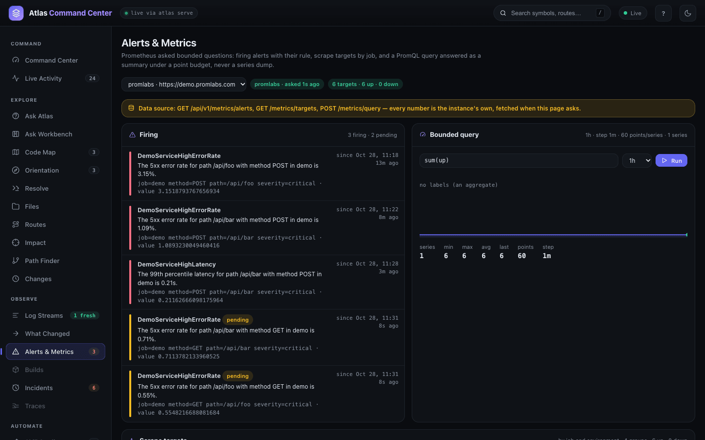
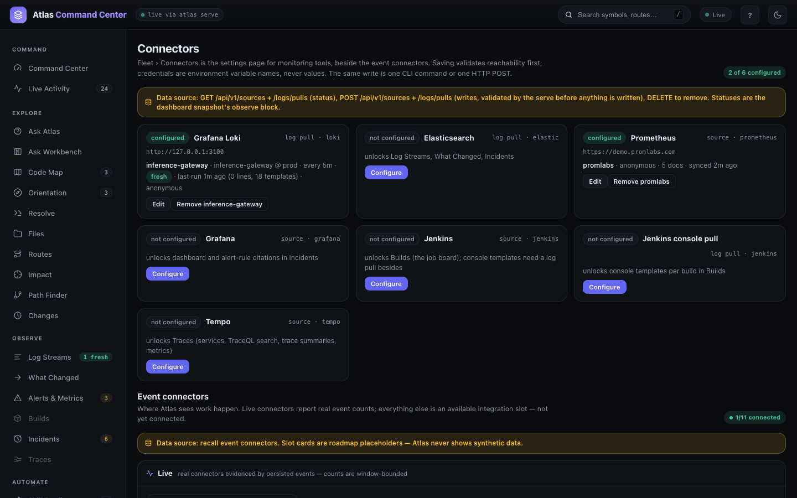
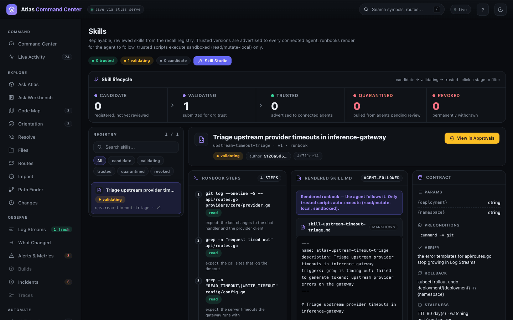
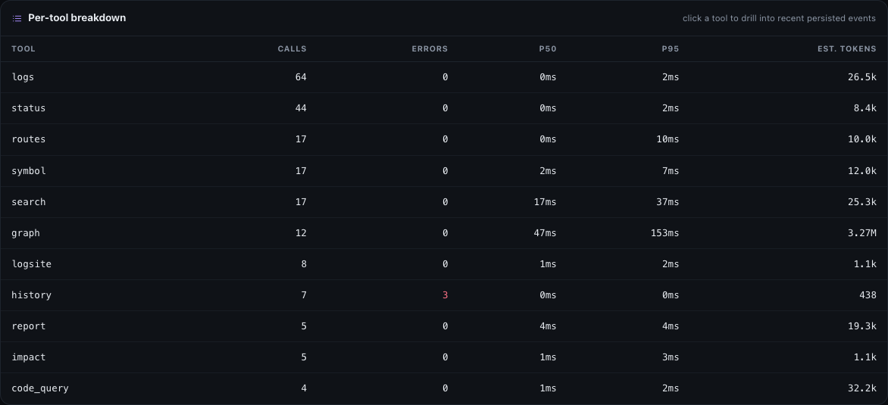

What Atlas does
Atlas builds a local index of a repository — its symbols, the calls and references between them, the HTTP routes it serves and the history of each indexing pass — and answers questions about it exactly, with a file and line for every claim. The same index feeds a browser dashboard, a command line, an HTTP API and AI assistants over MCP, so a person and an assistant read the same facts. This page shows each area in one frame and links to its guide. Every screenshot is from Atlas running on the public Go project inference-gateway.
Command Center
The dashboard opens on the Command Center: a summary of everything one Atlas service holds. Tiles count recall savings, connected devices, skills, events per minute and the service's own latency; a row below shows each configured monitoring tool; a live feed on the right lists the newest events. Every number is read from the running service, and every tile opens the view that owns it. The navigation rail on the left reaches every other area.

Read more: The dashboard.
Code Map
The Code Map draws the stored graph five ways. Clusters packs the whole repository as its folder tree; Flow reads one symbol with its callers on the left and callees on the right; Explorer lists the same relations with call-site evidence; Workbench (beta) is a canvas you arrange and export; Repos draws which services call which. Path Finder traces how one function reaches another, and Resolve maps a pasted log line back to the code that emits it.

Read more: Code Map and graph.
Search and Ask
Press / anywhere in the dashboard to search every indexed symbol by name, path or a word from its signature. Ask Atlas takes a question in plain language and answers with the lines that answer it — the best passage first, quoted and cited, then the other files that matched. For symbol questions it adds an exact verdict, such as the number of callers. An optional AI answer, written only from those passages, can sit on top.

Read more: Search and Ask.
Ask Workbench
The Ask Workbench is a conversation about the codebase. Atlas gathers the evidence — passages, definitions, routes, git history, and the tickets and pull requests of connected sources — and a model you choose writes the answer, citing each piece. The evidence panel lists every item the answer rests on, and the server keeps each thread, so you can come back to it or share its link.

Read more: Ask Workbench.
Impact and Routes
Before you change a symbol, Impact shows what the change could reach over stored call and import edges: every affected symbol, file and test, the routes whose handlers fall inside that radius, and the call sites in other indexed repositories. Routes lists the HTTP surface the index proved, each route with its handler. The same answers come from atlas impact and atlas context when you review a change.

Read more: Impact and review.
Change Lens
Every indexing pass is kept as a snapshot. The Change Lens shows the timeline of snapshots for a repository and, for any pass, what it changed: symbols added, modified and removed, files touched, call edges gained and lost. With a single snapshot it says a diff needs two and gives the command that makes the second. Freshness shows how current each index is.

Read more: Change lens and history.
Observe
Connect a log store, Prometheus, Jenkins or Tempo and an OBSERVE group appears in the navigation: Log Streams, What Changed, Alerts & Metrics, Builds, Incidents and Traces. Each answers a bounded question — the alerts firing now, the log templates growing since a deploy, the build that failed — and links what it finds back to the code that emits it. Atlas keeps templates and summaries, not raw lines.

Read more: Observe.
Connected Sources
Code is one source among several. atlas source indexes GitHub pull requests and issues, Jira, Confluence, OneDrive, Jenkins, Prometheus, Grafana and Tempo as virtual repositories beside your code, so a search or a Workbench question can cite a ticket as readily as a function. The Connectors page configures the monitoring tools: each card says what it unlocks, saving checks that the tool is reachable, and credentials are stored as environment variable names, never values.

Read more: Connected sources.
Skills and Automations
A skill is a reviewed runbook an assistant can follow: steps, the parameters it takes, its preconditions, how to verify it worked and how to roll it back. Skill Studio turns repeated sessions into a draft; Skills moves each one through candidate, validating and trusted, and only trusted skills are offered to connected assistants. Approvals holds the requests that wait for a person.

Read more: Skills and automations.
AI Assistants over MCP
atlas bootstrap registers Atlas as an MCP server for the assistants it finds on the machine — Claude, Codex, Copilot, Cursor, Gemini — and installs an instruction to ask Atlas before searching files. The assistant then calls the same tools the dashboard uses — search, symbol, impact, routes, logs and more. When assistants reach Atlas through the service, the System page counts every call, with errors, latency and the size of the answer.

Read more: AI assistant setup.
The CLI
Every answer the dashboard shows is also a command of the single atlas binary, with --format plain for people and JSON for scripts. Index, search, ask for callers, trace a path, size a change, read the graph report, export the graph, run the service:
atlas callers modelDenied --format plain
callers modelDenied total 5
ChatCompletionsHandler method api/routes.go:637 :: func (router *RouterImpl) ChatCompletionsHandler(c *gin.Context)
ImagesHandler method api/routes.go:1194 :: func (router *RouterImpl) ImagesHandler(c *gin.Context)
MessagesHandler method api/routes.go:842 :: func (router *RouterImpl) MessagesHandler(c *gin.Context)
…Read more: CLI reference.
How the Pieces Fit
- Index.
atlas indexparses a repository into symbols, edges and routes and stores them, with a lexical search index, in a local database. Each pass is a snapshot. - Graph. Every query — search, callers, path, impact, report — reads that stored graph. Nothing is guessed at query time.
- Surfaces. The same graph is served four ways: the CLI, the dashboard and HTTP API of
atlas serve, and MCP for assistants (atlas mcp, oratlas serve --mcp).
Core concepts explains snapshots, scope and output control; Getting started takes you from install to the first answer.